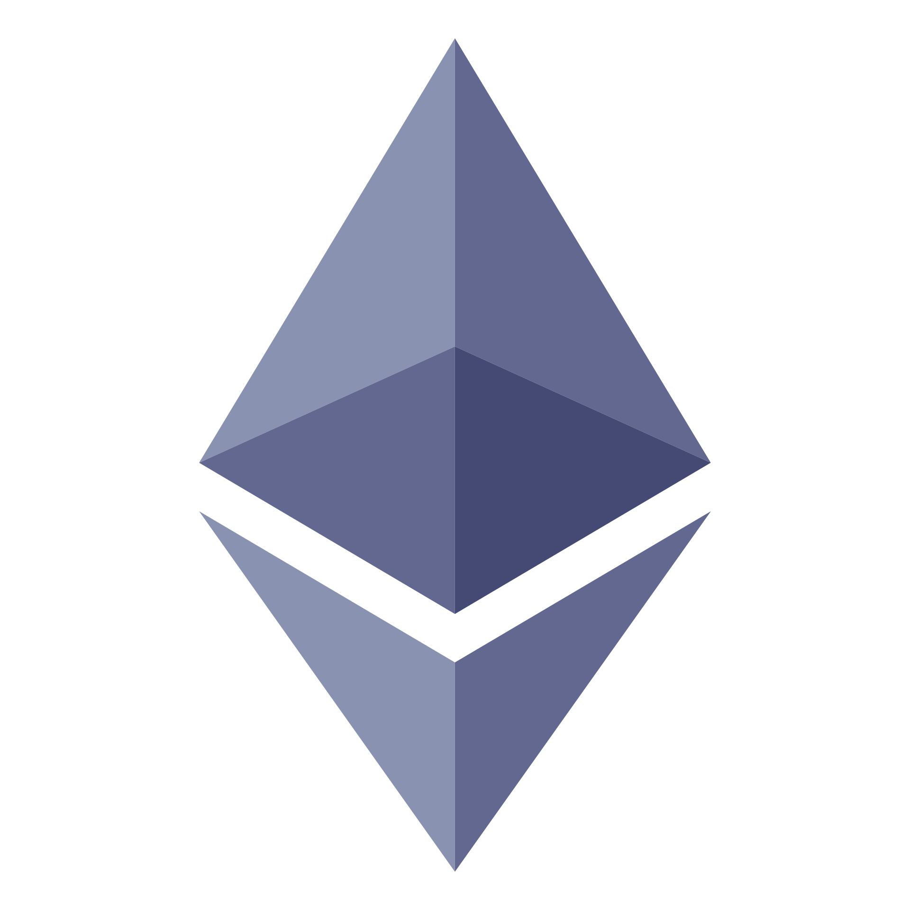

Proof of stake from zero
What Ethereum did after it fired its miners, run on your own machine.
Contents
- The bill Bitcoin never paid
- Locking coins instead of burning watts
- A computer, 32 ETH, and three jobs
- Lab 1, the proposer lottery
- Attestations, the vote that weighs
- LMD GHOST, following the heaviest subtree
- Lab 2, nothing at stake against slashing
- Finality, an economic burn notice
- Lab 3, the cost of attacking finality
- The bad behavior catalog
- The numbers, as of 2026
- Where the design traveled
01The bill Bitcoin never paid
The Bitcoin essay in this notebook ends on a number that should bother you. Every ten minutes, machines around the world burn a country's worth of electricity to do one job: make lying expensive. A miner who wants to rewrite yesterday has to out grind everyone else, and the grinding itself is the cost. Security comes from a bill that is paid forever, in watts, whether anyone is attacking or not.
That bill works. It also scales with the value being protected, which means the more successful the network gets, the more power it eats. People argued about this for years. Some said the waste is the point. Others said a system that secures money by boiling the ocean has a design flaw, not a feature.
Ethereum's founders were in the second camp from the start. Their answer, sketched in the earliest design notes and shipped much later, was to swap the entrance ticket. Instead of proving you burned electricity, you prove you own something the network can destroy: coins. Attack the network and your own deposit goes into the fire. Be honest and your deposit just sits there, earning a small wage for the work you do.
On September 15, 2022, at block 15537394, Ethereum switched the ticket mid flight. The event is called the Merge, and it is still the largest coordinated change any live blockchain has ever survived. Measurements compiled by the Ethereum Foundation with the UCL CCRI research group put the energy drop at roughly 99.95 percent. Not a rounding error of improvement. The network's power bill went from a small nation to a village of laptops, overnight, with no downtime.
This essay explains what actually replaced the miners. Not the slogan version. The moving parts: how a validator is chosen to build a block, why thousands of computers vote every few seconds, what happens when two honest computers disagree, and why a transaction that is finalized on Ethereum is harder to undo than a six confirmation Bitcoin payment ever was. Each idea gets a lab that runs in this page, on your machine, with real SHA-256 from your browser's own crypto engine.
02Locking coins instead of burning watts
Staking is boring on purpose. You send coins to a program on the chain, a smart contract, which is just code that runs by consensus and cannot be quietly edited. While your coins sit in that contract, they are collateral. The protocol knows the deposit is yours, knows how much it is, and holds the key to a punishment that costs you something real.
That is the entire trick. Proof of work makes attacks expensive by burning energy continuously. Proof of stake makes attacks expensive by holding a hostage: your own deposit. The energy bill disappears because the threat no longer needs watts behind it. It needs a balance the network can confiscate.
Ethereum's staking deposit contract is one of the oldest programs still running on the chain. Its address is 0x00000000219ab540356CBB839Cbe05303d7705Fa. The contract began accepting deposits on November 4, 2020. The Beacon Chain, the new proof of stake engine, launched on December 1. For almost two years it ran alongside the old mining engine like a pilot light, holding real money and doing real work while miners still produced the blocks everyone used.
One objection comes up immediately. If the coins are locked, is anything really at risk for a rich attacker? Yes, and the risk is specific: the protocol can burn stake. An isolated slash starts with a small immediate penalty and a forced exit. The later correlation penalty grows when many validators are slashed together and can consume the full effective balance in a coordinated attack. The signatures and penalties are public.
The counter question matters too. Can you get your coins back? For the first years after the Merge, embarrassingly, no: withdrawals were not wired up yet. That changed on April 12, 2023, with the upgrade called Shapella, which let stakers exit and take their deposits home. Since then the lock is real but not a life sentence, and that balance, punisable yet retrievable, is what makes the collateral believable.
03A computer, 32 ETH, and three jobs
A validator is the machine that replaced the miner. In its smallest legal size it is a deposit of 32 ETH (ether, the currency of Ethereum) plus a computer, often just a small box in someone's house, that stays online and follows the protocol. Anyone can start one. There is no license, no committee, no identity check. The deposit is the whole application.
The machine has three jobs, and the rest of this essay is basically the story of those three jobs.
First, sometimes the validator is chosen to propose a block: gather pending transactions, order them, wrap them in a block, and offer it to the network. Second, far more often, it attests: sign a short vote saying which block it currently believes is the head of the chain. Third, it serves on committees, small random groups of validators that are handed one specific slot to watch together, so no single machine's word is ever trusted alone.
Notice what is missing: racing, hashing at full speed, buying warehouse sized machines. A validator earns its keep by showing up. Miss a vote and you leak a tiny penalty. Show up and you earn a small reward, year after year. The system pays for presence, not for horsepower.
How often does an ordinary validator get to propose? Rarely. Blocks come every 12 seconds, one proposer each, 32 per epoch (an epoch being 6.4 minutes). With roughly one million validators active as of February 2025, a single 32 ETH validator expects to propose about once every four and a half months. Your laptop is mostly voting, and occasionally, like a juror called to the front of the courtroom, it builds the block itself.
Two upgrades softened the edges of this design, both landing in the Pectra upgrade on May 7, 2025. EIP-6110 lets the consensus layer recognize a deposit in about thirteen minutes instead of waiting through the old polling path. Activation still depends on the validator queue. EIP-7251 let one compounding validator hold up to 2048 ETH of effective stake, so large operators can consolidate validator records. The 32 ETH floor for solo entry did not move, but the ceiling did.
04Lab 1, the proposer lottery
Every 12 seconds the network needs exactly one proposer, and it cannot let anyone volunteer. The selection is a lottery where your tickets are your coins: the protocol stirs unpredictable hashed data into each slot so nobody can precompute the winner far ahead, then the hash lands on a validator with probability proportional to stake. Double your deposit and you double your odds. The fairness is not enforced by a referee, it falls out of arithmetic.
This lab runs the lottery for real. Six validators, stakes you can edit, one thousand slots. For each slot your browser computes an actual SHA-256 hash through crypto.subtle, converts the hash to a big integer, and takes it modulo the total stake to pick the winner. Then it compares each validator's expected share of wins against the share it actually got. Watch the two columns converge, then set one stake to triple and run again.
LAB 01The proposer lottery
REAL SHA-256, TOY NETWORK. Selection here is hash modulo total stake; Ethereum itself shuffles validators and applies a stake weighted proposer function, but the convergence lesson is the same law.
idle. press RUN 1000 SLOTS to draw the lottery.
Two things to notice when it finishes. First, the biggest gaps between expected and actual sit on the fattest validator, because absolute wobble scales with share. Second, nobody's number is exactly on target after a thousand draws, and that is the point: the lottery is honest in expectation, not in any single window. A chain needs years of slots for the shares to settle, and a would be cheater needs the same years to feel the odds grind them down.
05Attestations, the vote that weighs
Proposing is the glamorous job, but the load bearing one is attesting. Once per epoch, every single validator signs a vote that says, in effect: here is the block I saw at the head of the chain, and here is the checkpoint I consider latest and greatest. That signed vote is an attestation. It is small, it is public, and it is the raw material everything else is built from.
Think of the chain not as a tower built by proposers but as a consensus weighed by voters. A proposer offers a block; the committees of that slot check it and sign; the next proposer bundles those votes into the next block. Blocks carry attestations the way letters carry postmarks. Each new block is a receipt for thousands of votes about its parent.
Why committees? With a million validators, having everyone vote on everything, every 12 seconds, would melt the network. So each slot, the protocol deals validators into one committee, a random sample big enough that attacking it means attacking the whole pool. Your validator votes once per epoch, and the epoch's 32 committees cover the entire set: every validator, every epoch, no exceptions. Skipping your duty is not a crime, but it costs you: your balance leaks a little every time you fail to show up.
The design has a beautiful property buried in it. Because votes are signed and bundled on chain, the network does not need to trust gossip or popularity. The weight of a block is literally countable: add up the attestations for it. When two versions of history compete, there is no argument, only arithmetic. Which brings us to the rule that breaks ties.
06LMD GHOST, following the heaviest subtree
Sometimes two blocks appear at the same height. A proposer was offline and came back late, or a message crossed the planet slowly, and now there are two competing versions of the tip of the chain. Bitcoin's answer is crude and effective: follow the longest chain. Ethereum's answer looks one level deeper: follow the heaviest subtree.
The rule's full name is Latest Message Driven Greedy Heaviest Observed SubTree, which is a mouthful until you unpack it. Take each validator's latest signed vote, the latest message. Start at the genesis block and walk forward. At every fork, count not the blocks but the total stake that voted anywhere inside each branch, the subtree weight. Walk into the heavier side. Repeat until you reach the tip. That tip is the head of the chain. GHOST is the tree walking part; LMD is the part that says only each validator's most recent vote counts, so stale votes cannot pile up and skew the count.
Picture it. Fork A has four blocks in a wobbly line, with 20 percent of stake voting under it. Fork B has two blocks but 70 percent of stake voting under it. Longest chain picks A. Heaviest subtree picks B. The subtree view matters because the network is messy: blocks arrive late, votes get missed, and a lucky streak can build a thin tower. What users actually care about is where the mass of money is looking, and the mass is expressed in attestations, not in block count.
There is a second payoff. Under this rule, an attacker who wants their favorite fork to win cannot just mine fast like in the old world. They need to attract votes, and votes come from real validators with real deposits. The fork choice rule turns every dispute into a stake weighted election that re runs every 12 seconds.
07Lab 2, nothing at stake against slashing
Here is the hole in naive proof of stake, the one critics found in the 2010s and designers had to answer. Suppose two forks are racing and you are a validator. Voting for both costs you nothing. If fork A wins, great, you were on A. If fork B wins, great, you were on B. Why not sign everything? In mining, supporting both forks means splitting your electricity, real money, real constraint. In a naive staking world there is nothing at stake, so every rational validator hedges on every fork and forks never die.
Ethereum's answer is slashing, and it is surgical. Certain signature pairs are self incriminating: propose two blocks for one slot, double vote for one target epoch, or cast a vote that surrounds an earlier vote. Anyone can submit that evidence. Under the current rules, a 32 ETH validator immediately loses 0.0078125 ETH, is forced out over about 36 days, and takes a later correlation penalty that grows with the amount slashed at the same time. A coordinated attack can lose the full effective balance. The Ethereum Foundation's current penalty guide documents those numbers.
This lab runs the race both ways. An equivocating validator (that is the technical word for signing two conflicting things) signs both forks for 200 rounds. In the first arm, no slashing rule exists, so hedging is free profit. In the second arm, each round carries a chance an honest validator catches the double signature and burns the floor. Same cheater, same luck, two different economies.
LAB 02Nothing at stake vs slashing
TOY INCENTIVE SIMULATION, 200 ROUNDS. The reward and 30 percent catch chance are chosen for legibility. Ethereum exposes slashable signatures as public evidence, not a random catch game. The modeled 0.0078125 ETH immediate penalty is current for a 32 ETH validator; forced exit, balance drain, and the correlation penalty are omitted.
idle. press RUN 200-ROUND RACE to watch both economies.
The lesson is not that slashing catches everyone. Most rounds, nobody is watching. The lesson is the incentive gradient: with no rule, cheating is weakly profitable forever; with the rule, cheating is a lottery ticket where the prize is small and the losing ticket costs your deposit. Nobody rational buys that ticket, which is why real equivocations on mainnet are famous precisely because they are so rare, and usually turn out to be software bugs reporting themselves.
08Finality, an economic burn notice
Everything so far, votes and fork choice, is soft. Blocks can still be reorganized if the votes swing. Finality is the hard layer on top, and it is where proof of stake does something proof of work never could.
Every epoch boundary, the last block of the epoch is marked as a checkpoint. Validators include a second vote in their attestations, a checkpoint vote. When a checkpoint collects votes from two thirds of all staked ETH, it becomes justified; when the next checkpoint after it also gets its two thirds, the earlier one is finalized. The lag is two epochs, roughly 12.8 minutes from block to certainty.
Now the burn notice. The rule set that governs this, called Casper FFG, comes with an accounting theorem: if two conflicting checkpoints are ever both finalized, then at least one third of all stake must have voted in ways that contradict each other. Not maybe. Must. And contradictory votes are precisely the slashable kind. A finalized transaction cannot be reversed without burning at least one third of everyone's collateral, an amount in the millions of ETH at today's staking levels. That is what the phrase economically final means: reversal is not impossible, it is priced, and the price is destruction on a scale no attacker has ever volunteered for.
Compare that with the Bitcoin page's attacker math. There, an attacker holding a fraction q of the hashrate can catch up from z blocks behind with probability given by the old Satoshi formula, and every extra confirmation just multiplies the odds against them. Six confirmations makes an attack unlikely, not impossible. A hundred makes it astronomically unlikely. The guarantee decays into probability at every depth. Finality is a different animal: below the burn threshold, reversal is not improbable. It is unaffordable by construction. The next lab puts a price tag on it.
09Lab 3, the cost of attacking finality
One slider, two ledgers. Pick the attacker's share of staked ETH and the lab prices both worlds. The proof of stake column uses the accounting rule from the last section: reverting a finalized checkpoint burns at least one third of the staked pool, and a solo attacker needs to be that third, so their own deposit is the bill. The proof of work column runs the Satoshi catch up formula for the same share, with six confirmations, the number merchants classically waited for.
LAB 03Attacker cost calculator
MODEL, NOT MEASUREMENT. Staked pool fixed at 36,000,000 ETH, the as of-2025 figure from the fact sheet. The PoS column assumes the attacker is the only cheater; the PoW column is the classic q formula with z = 6. Move the slider to recompute.
idle. slide the share, then press COMPUTE.
Squint at the two outputs and a shape emerges. The proof of work number is a probability, so it is always arguing about how unlikely you are to lose. The proof of stake number is a bill, so the argument ends the moment you read it. Below one third, the attacker cannot reach finality's undo switch at all; at one third they can stall it, at a cost of their entire deposit; and every ETH they add to win the fight is an ETH the protocol can burn if they try. The attacker is buying a sword that melts in their hands the instant they swing it.
10The bad behavior catalog
Slashing only covers actions that are provably malicious from signatures alone. The catalog is short because the standard of proof is high.
Equivocation, the lab 2 crime: two signatures for the same slot or two votes for the same target height. Mathematically impossible to do honestly, so it burns. Surround votes are sneakier: a validator signs a vote that encircles an earlier vote of its own, effectively claiming it saw the future. Also impossible to produce by accident, also burns. That is the whole slashing list, and its brevity is deliberate: anything a buggy client could do by mistake belongs in the penalty column, not the execution column.
And the failure mode nobody can slash their way out of: inactivity. If more than a third of stake simply goes silent, checkpoints stop reaching their two thirds and finality stalls. No one cheated, so no one can be slashed. The protocol instead enters an inactivity leak: validators that keep voting keep their balance, validators that stay absent bleed stake until their weight is gone. The pool shrinks around the survivors until two thirds of what remains is again reachable and finality resumes. It is ugly, slow, and it has never been needed on mainnet, but it means even a catastrophic blackout ends with the chain finalizing again, not frozen forever.
One distinction keeps the system fair. Penalties for absence are small leaks, the cost of an unreliable machine. Slashing is reserved for conduct that cannot be innocent. Honest operators with flaky wifi lose coffee money. Cheaters lose the farm.
11The numbers, as of 2026
The honest version of this section comes with dates attached, because every figure here moves.
As of August 2025, about 30 percent of all ETH, roughly 30.14 percent, was staked, around 36 million ETH. Ethereum's official staking documentation recorded more than 1.2 million validator accounts registered by April 2026. That is a count of accounts ever registered, not a count of independent operators or machines. Pectra's 2048 ETH compounding ceiling lets operators consolidate records without reducing their stake.
Reward rate ran a typical 2.6 to 3.4 percent APR as of 2025, drifting down as the pool grows: the protocol issues a roughly fixed reward budget, so more stakers means thinner slices. After the May 2025 upgrade, the network recognizes a deposit in about thirteen minutes, then the activation queue determines when it starts attesting. Getting out also uses a queue that meters the pace. Pool shares move over time, so this page avoids freezing one provider's percentage into the explanation. The lasting risk is concentration: whoever controls more stake carries more consensus weight.
The receipt for the whole experiment sits in the numbers from section 01. The roughly 99.95 percent energy drop, measured after the Merge by the Ethereum Foundation and UCL CCRI, has held. By April 2026, more than 1.2 million validator accounts had been registered, although many can run on the same machine or belong to one operator.
12Where the design traveled
Ethereum was not the first proof of stake network, but it was the largest thing to switch engines mid flight, and after the Merge the design spread everywhere. Two very different descendants get their own essays in this notebook. Solana kept the collateral idea and threw away the waiting: stake weighted validators plus a cryptographic clock called proof of history let it finalize transactions in under a second, paying for the speed with hardware requirements that would make an Ethereum validator blush. Sui starts from objects rather than accounts and uses its stake set differently still, with ownership declared in the data model so most transactions never contend at all. Same bet as this whole essay, collateral instead of electricity, wildly different chassis. If you want the one page version of all six essays, the summary page keeps the receipts.
For now, scroll back up. Run the lottery, race the equivocator, price the attack. The security of a hundred billion dollar system is three small programs in your browser tab, and none of it is magic. It is collateral, arithmetic, and a very well designed match.